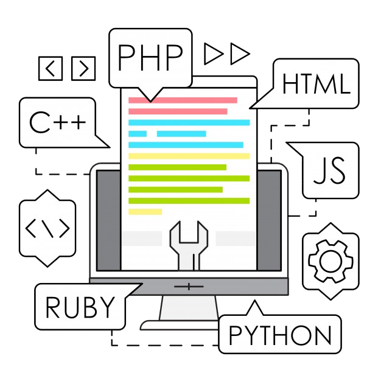

-
PARA ATUAR EM TI É NECESSÁRIO SABER PROGRAMAR?!
Algumas pessoas que gostam de tecnologia e tem o desejo de trabalhar com TI, Sistemas de Informação ou em áreas correlatas podem se perguntar - é necessário saber programar?
A resposta é NÃO. A arte de programar não limita o profissional a ler e executar códigos, criar programas ou trabalhar com eles, no entanto, exige uma base consistente de raciocínio lógico e lógica de programação. Em outras palavras, requer habilidade de pensamento lógico, pois o computador executa os comandos que nós criamos através da lógica da programação.
NÃO DESANIME. HÁ ESPAÇO PARA VOCÊ QUE NÃO TEM AFINIDADE COM PROGRAMAÇÃO!
Antes de continuarmos, vamos separar a programação em níveis de aprendizagem:
Nível básico - tem conhecimento básico de lógica de programação, sintaxes, operadores lógicos e aritméticos. É capaz de manipular os tipos de dados, porém, com defasagem em conhecimentos estruturais.
Nível intermediário - nessa etapa o programador aprofunda mais seus conhecimentos, adquire lógica de programação orientada a objetos, operadores binários, conexão com banco de dados e etc.
Nível avançado - como um sênior da área optada, o profissional tem aprofundado uma linguagem de atuação, domínio em metodologias de desenvolvimento, conhecimentos estruturais, entre outros.
Saber o seu nível em programação permite escolher três segmentos de atuação na área de TI.
1. Desenvolvimento
É a área que recebe a maior visibilidade atualmente, devido à demanda por criação de aplicativos mobile, sistemas, sites para empresas, jogos digitais, entre outras soluções para resolver problemas do dia-a-dia das pessoas.
O mercado de trabalho é vasto:
- Jogos;
- Web;
- Mobile;
- Desktop,
- Entre vários outros ramos.
2. Infraestrutura
Nessa área a exigência por programação não é tão alta como em Desenvolvimento, por outro lado, requer conhecimentos em hardware, software, redes e instalações. É composta de recursos físicos e virtuais que suportam o fluxo, o armazenamento, processamento e análise de dados.
O profissional voltado a essa área poderá atuar com:
- Data Center;
- Computação em Nuvem;
- Analista de Suporte.
3. Gestão
É a conexão da área de tecnologia com a área de humanas. Envolve a gestão de pessoas, processos e documentação, além de gerenciamento de projetos (sites e redes) até a verificação da qualidade de sistemas e tecnologias já implantadas.
Para esse cargo são exigidos certos certificados como o ITIL (Information Technology Infrastructure Library), COBIT (Control Objectives for Informationandrelated Technology) ou PMBOK (Project Management BodyofKnowledge) para conduzir a gestão de projetos.
-
A PROCURA DE PROFISSIONAIS DE TI EM OUTROS PAÍSES
A demanda por profissionais nas áreas de TI cresce relativamente com o avanço da tecnologia no mundo, e as áreas de Desenvolvimento de Software, Ciência de Dados e Engenharia de Dados são as que mais contratam.
De acordo com o relatório da IDC, de dezembro de 2019, o mercado mundial de TI terá um déficit de 570 mil profissionais em 2020.
A IDC (International Data Corporation) é a principal fornecedora global de inteligência de mercado, serviços de consultoria e eventos para os mercados de tecnologia da informação, telecomunicações e tecnologia de consumo.
Portanto, existe uma demanda muito grande por profissionais qualificados. Não só demandas nacionais como internacionais também. Veja a seguir alguns países que oferecem vagas de emprego na área de TI.
ESTADOS UNIDOS
Sempre que cogitamos a possibilidade de trabalhar no exterior, nosso primeiro pensamento é de vivenciar o sonho americano. Não é à toa, já que, os EUA são a segunda maior economia mundial e o segundo maior mercado consumidor, atrás somente da China. Além de concentrar as melhores universidades, centros de pesquisas e as maiores empresas de TI.
Segundo análise feita pelo site de empregos Indeed, na área de Segurança Cibernética, os cargos mais bem remunerados são:
- Engenheiro de Segurança de Aplicativos
Salário médio de US$ 128 mil ao ano.- Diretor de Segurança da Informação
Salário médio de US$ 127 mil por ano.- Engenheiro de Nuvem
Salário médio de US$ 126 mil ao ano.

CANADÁ
Dentre as vagas com maior disponibilidade estão as de:
Dentre as vagas com maior disponibilidade estão as de:
- Desenvolvedores e Programadores;
- Gerentes de projetos de TI;
- Analistas de informações, Analistas de Negócios de TI e Analistas de Garantia de Qualidade;
- Engenheiro de Software;
- ADM de redes.
As vagas para esses profissionais estão concentradas nas cidades de Montreal, Toronto, Quebéc e Alberta.
Contudo, para se candidatar a uma vaga, o profissional precisa ser fluente em inglês ou francês, além de ter formação em TI ou em áreas correlatas.
INGLATERRA
Não é de hoje que a qualidade e estilo de vida da cultura inglesa cativa os estrangeiros. Lá também se concentram grandes empresas nacionais e multinacionais.
Segundo a pesquisa realizada pelo maior site de empregos do Reino Unido – Reed – entre as 10 profissões com melhores salários no país, destacamos algumas:
- Arquiteto de Nuvem:
Esse profissional é responsável pelo projeto, construção, manutenção e implantação de serviços como planos de adoção, gerenciamento e monitoramento de nuvem.
Salário médio anual: £ 98.000 / R$ 482.160,00 ano;
Salário médio mensal: £ 8.100 / R$ 39.852,00 mês.
- Data Modeller:
O profissional trabalha diretamente com modelos de dados, usando suas habilidades analíticas para criar bancos de dados de computador.
Salário médio anual: £ 94.000 / R$ 462.480,00 ano;
Salário médio mensal: £ 7.800 / R$ 38.376,00 mês.
- Arquiteto de segurança:
Os arquitetos de segurança são responsáveis pelo projeto, construção e teste do sistema de segurança de uma organização contra possíveis ataques externos.
Salário médio anual: £ 90.000 / R$ 442.800,00 ano;
Salário médio mensal: £ 7.500 / R$ 36.900,00 mês.
- Arquiteto Java:
Tem como objetivo projetar, desenvolver e atualizar uma arquitetura completa que suporta aplicativos Java. Também tem como função verificar dados relacionados à organização de websites, intranets, comunidades online e software para facilitar o acesso às informações.
Salário médio anual: £ 85.000 / R$ 418.200,00 ano;
Salário médio mensal: £ 7.000 / R$ 34.440,00 mês.
IRLANDA
A CLP Jobs é uma agência de recrutamento conceituada em vários setores. De acordo com essa agência, as áreas de atuação com maior destaque em 2019 foram:
- Engenharia de Software;
- Gerenciamento de Projetos – ProductOwners, Scrum Masters, AgilesCoaches;
- Infraestrutura de TI;
- Desenvolvedores UI/Front-end;
- Design UX/UI;
- Inteligência de Negócios e Dados.
Para mais informações sobre outras vagas, requisitos e salários visite a CLP Jobs.
FRANÇA
Os profissionais qualificados mais procurados estão concentrados na área de:
- Engenharia de Software;
- Gerentes de engenharia;
- Desenvolvedores;
- Analistas de TI.
Um grande incentivo que o governo francês propôs é fixar, a cada ano, cotas para entrada de trabalhadores de acordo com a necessidade no mercado de trabalho, onde é incluso um visto de trabalho de duração pré-determinada. O governo francês anunciou também que tem como objetivo receber 500.000 estudantes internacionais até 2027.
PORTUGAL
Com a alta demanda, Portugal criou um visto especial para atrair os profissionais de TI. O programa é voltado a empresas tecnológicas e inovadoras, inseridas no mercado global. O Tech Visa é um visto menos burocrático do que outros vistos de trabalho, no entanto, o candidato precisa ser recrutado por empresas que tenham aderido ao programa junto ao Ministério da Economia português.
- Informações sobre o programa Tech Visa consulte o portal do IAPMEI.
- Informações sobre a solicitação e documentação necessária.
Demanda de algumas áreas de atuação:
- Web Developer;
- Mobile Developer;
- Especialista de Integração;
- ADM de Sistemas;
- Especialista em Segurança;
- Especialista em Business Intelligence;
- Data Scientist;
- Especialista de Big Data;
- IT Manager;
- Infrastructure Manager.
Inglês, francês e alemão são idiomas valorizados nas empresas de TI em Portugal.
Há muitas oportunidades em cidades como: Lisboa, Oeiras e Porto. Devido à concentração de empresas tecnológicas.
-
PRINCIPAIS CARREIRAS DE TI
Data Science - Cientista de dados
Esse profissional, da "nova geração", apresenta um grande conhecimento em matemática, estatística, TI e conhecimentos de negócios. Exerce sua função com a análise de dados complexos (Big Data) e extra informações úteis de um grande volume de dados, a fim de solucionar possíveis problemas encontrados na extração de dados e obter os melhores resultados.
O cientista de dados utiliza algumas linguagens de programação como Python, R e Julia. Tem o domínio de frameworks de processamento e armazenamento de dados, como Hadoop e Spark. Faz uso do banco de dados estruturados (SQL) e banco de dados não-estruturados (MongoDB).
Segundo o site Glassdoor, a falta de Data Sciences qualificados tornou a profissão uma das melhores da América. Os ótimos salários são um atrativo para saciar a alta demanda.
De acordo com uma pesquisa da IBM (International Business Machines Corporation), essa demanda tende a subir 28% até 2020. Sendo que 60% da procura por esses profissionais é na área de finanças.
Engenheiro de Software
O engenheiro de software atua no desenvolvimento de programas, aplicativos e sistemas, manutenção e adaptação a diferentes processos produtivos. Tudo para cumprir aos requisitos determinados.
CareerCast, site especializado em carreiras tecnológicas, aponta como 2ª melhor profissão na área de TI, em razão do crescimento e remuneração.
Uma vez tendo a formação acadêmica de engenheiro concluída e registrada pelo CREA (Conselho Regional de Engenharia e Agronomia), o profissional poderá:
- Gerenciar projetos ligados aos softwares;
- Arquitetar o design estrutural dos programas;
- Realizar testes nos sistemas;
- Trabalhar como Analista de Sistemas, Analista de Requisitos, etc.
Ter conhecimentos em JavaScript, Visual Basic, Python, C++, C# é um diferencial para o engenheiro de software.
Segurança da Informação
É um setor que exige muita atenção aos detalhes, raciocínio lógico e tranquilidade, pois não devem ocorrer falhas, uma vez que, pode colocar o nome da empresa em risco, caso haja uma invasão nos sistemas operacionais. Esse profissional é responsável pela proteção dos dados da instituição, empresa startups ou privadas.
Deve ter um vasto conhecimento em protocolos, como o TCP/IP (TransmissionControlProtocol/Internet Protocol) e as inter-redes, ferramentas de monitoramento, configuração de redes, afinidade com tecnologias e etc. Cursos como Ciência da Computação, Engenharia da Computação dão o suporte para o profissional adquirir esses conhecimentos.
As e-commerces são um grande atrativo para esses profissionais recém formados.

Administração de Redes
O Administrador de Redes é responsável pelo gerenciamento da rede local, instalação, configuração de equipamentos, softwares e manutenção dos sistemas operacionais. Esse cargo requer muito conhecimento técnico e certificações para poder lidar com vários processos.
Cisco-CCNA (Cisco Certified Network Associate)
Certificações da Microsoft:
MCP - Microsoft Certified Professional*;
MCSE - Microsoft Certified Solutions Expert*;
MCSA - Microsoft Certified Solutions Associate*.
*À partir de 30 de junho de 2020, a Microsoft não concede mais esses certificados, e será "inativo" após dois anos para os que já possuem. A recomendação é migrar para as recentes certificações baseadas em funções, como Azure, Microsoft 365, Data e AI e Dynamics 365.
Algumas áreas de atuação:
- Administrador de Redes de Computadores;
- Supervisor de Segurança de Redes de Computadores;
- Supervisor de Operação de Redes de Computadores;
- Supervisor de Redes de Computadores;
- Supervisor Técnico em Configuração e Manutenção de Redes de Computadores.
Administrador de Banco de Dados
Seu papel na empresa é fazer uma gestão ideal dos bancos de dados, além de ser responsável por instalar, configurar e administrar os data centers, desenvolver sistemas de banco de dados, realizar procedimentos periódicos de backup para a segurança das informações, emitir relatórios. O Administrador de banco de dados deve garantir a proteção e a disponibilidade das informações.
O ADM em Banco de Dados deve ter domínio em Banco de Dados Oracle, SQL-Station, gerenciador de modelos ModelMart, DBExaminer, entre outros. Além do domínio de sistemas operacionais e conhecimento em arquitetura de computadores.

Especialista em Cloud Computing
A Cloud Computing é uma tecnologia que consegue hospedar muitos recursos, programas e informações. Não é mais preciso investir em downloads, hardwares, sistemas operacionais e softwares para conseguir algum tipo de aplicação; basta acessá-los on-line, de qualquer lugar. Com a tecnologia de utilização de um servidor remoto, vários dispositivos de usuários podem ser conectados a um computador em nuvem.
Um bom exemplo de seu funcionamento são as plataformas de streamings, como a Netflix, Amazon Prime e Spotify. Com apenas uma conexão com a internet podemos navegar nessas plataformas por qualquer aparelho compatível, seja um smartphone, tablet ou desktop. Não há a necessidade de download ou qualquer instalação.
Portanto, o especialista em Cloud Computing será um profissional estratégico e extremamente requisitado nas organizações e empresas de TI. Ademais, o especialista deve garantir a segurança às informações e o armazenamento de dados na nuvem. Ter aptidão não só em planejar e executar, mas em adquirir as principais certificações cloud para desempenhar sua função, como:
- Certificação Amazon AWS: Nível Foundation, Nível Associate e o Nível Professional;
- Certificate of Cloud Security Knowledge: Nível Open, Nível Professional e o Nível Architect;
- Google Cloud Architect;
- VMware Certified Professional;
- RedHatOpenStack;
- Certificação Microsoft Azure.